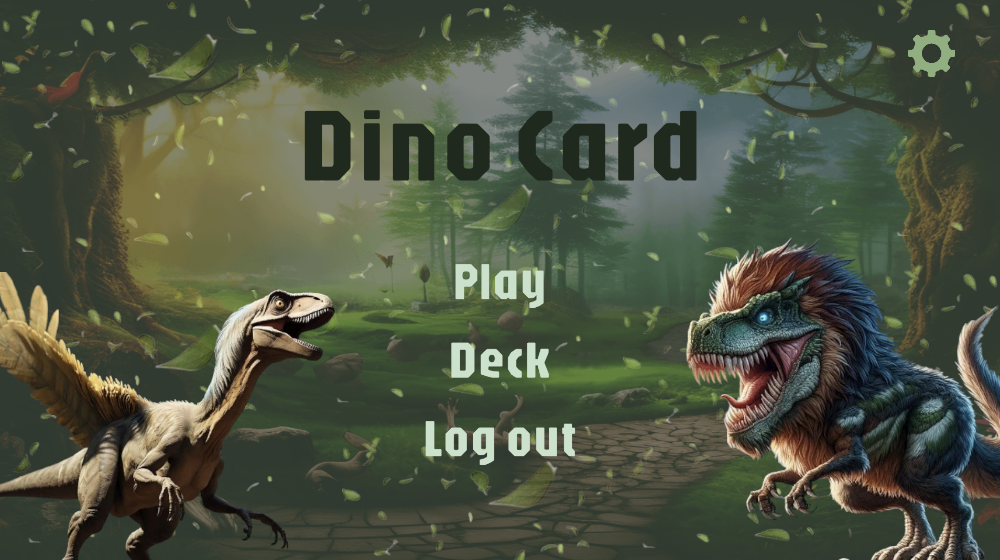

Instrucciones para Jugar DinoCard
Componentes del Juego
- Cartas de Dinosaurios: Representan a los dinosaurios que usarás en el combate.
- Cartas con Habilidades: Proveen habilidades especiales o ataques para tus dinosaurios.
- Deck (Mazo): Contiene tus cartas de dinosaurios, habilidades y energía.
- Bench (Banco): Lugar donde colocas tus dinosaurios de reserva.
- Zona de Juego: Área donde colocas tus dinosaurios activos, podras atacar, usarla para defensa y usas las cartas de habilidad y energía.
Preparación del Juego
- Construir el Deck: Cada jugador debe tener un deck con un número 20 cartas.
- Cartas Iniciales: Al inicio del juego, cada jugador iniciara con 5 de sus 20 cartas totales.
- Colocar Dinosaurios en el Bench: Cada jugador puede colocar hasta 5 dinosaurios en el bench.
Mecánicas del Juego
Turno del Jugador
- Colocar Dinosaurios en el Banco: Puedes colocar dinosaurios adicionales en tu banco si tienes espacio y ambar (energia).
- Usar Cartas de Habilidad: Puedes jugar cartas de habilidad para mejorar tus dinosaurios o debilitar a los del oponente.
- Atacar: Si tienes un dinosaurio en la zona de juego, puedes atacar a los dinosaurios del oponente (si estan activos), si no atacaras la vida del oponente.
Ataque
- Declarar el Ataque: Elige con cual de tus dinosaurios activos (en el bench) vas a querer atacar, al igual, eliges al dinosaurio rival al que atacaras.
- Retirar Dinosaurios Derrotados: Si un dinosaurio recibe daño igual o superior a su salud, es derrotado y retirado del campo.
Final del Turno
- Victoria o Derrota: El oponente que logre primero acabar con la vida del oponente, es el jugador ganador.
Condiciones de Victoria
- Derrotar Dinosaurios: Derrota a los dinosaurios del oponente y hacerle daño a su base.
- Vida de la Base: Cada jugador empieza con una barra de vida completa, el jugador que se quede sin vida perdera.
Ejemplo de Turno
Jugador
- Roba una carta del deck.
- Coloca un dinosaurio en el banco.
- Adjunta una carta de energía a su dinosaurio activo.
- Juega una carta de habilidad para aumentar el ataque de su dinosaurio.
- Declara un ataque y causa daño al dinosaurio del enemigo.
- Finaliza su turno.
